Owani
Owani · Aomori
Owani
Highlighted on the Aomori map.

Stay
登録有形文化財の宿 ヤマニ仙遊館

Touroku Yuukei Bunkazai No Yado Yamani Senyuu Kan
星野リゾート 界 津軽
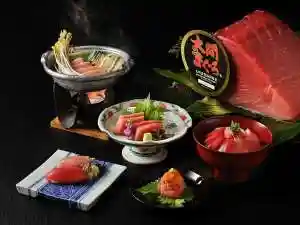
Hoshino Rizooto Kai Tsugaru
大鰐温泉 不二やホテル
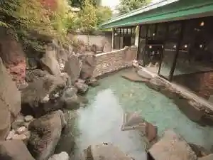
Oowani Onsen Fuji Ya Hoteru
青森ワイナリーホテル
Aomori Wainariihoteru
正観湯温泉旅館
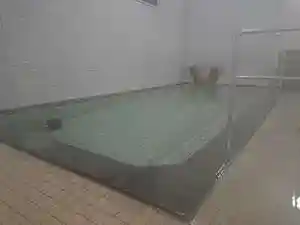
Seikan Yuon Izumi Ryokan
Dining
青森ワイナリーホテル

Aomori Wainariihoteru
ケルン
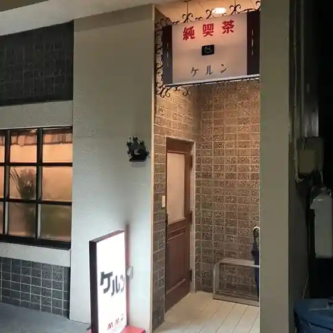
Kerun
ヤマニ仙遊館
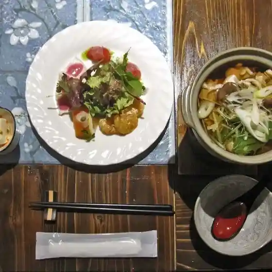
Yamani Senyuu Kan
黒姫
Kurohime
不二やホテル
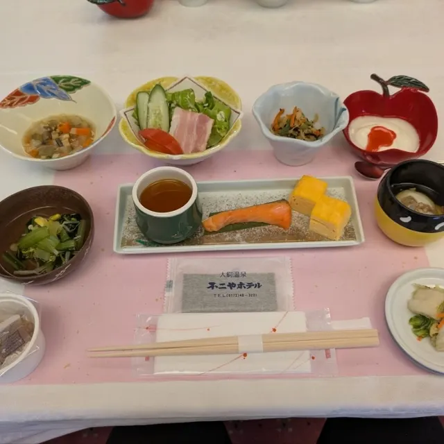
Fuji Ya Hoteru
ティー倶楽部
Teii Kurabu
シュバルツバルト
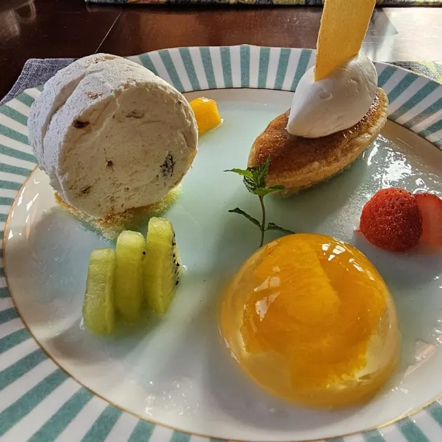
Shubarutsubaruto
こがねちゃん弁当 大鰐店
Koganechan Bentou Oowani Mise
福士旅館
Fukushi Ryokan
お味処 千保
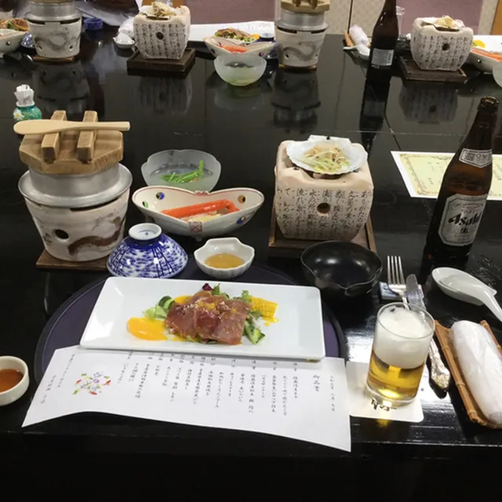
O Ajidokoro Sen Ho
日本料理 ち里
Nihonryouri Chi Sato
山忠会館
Yamachuu Kaikan
ヒュッテ銀嶺
Hyutte Ginrei
なでしこ
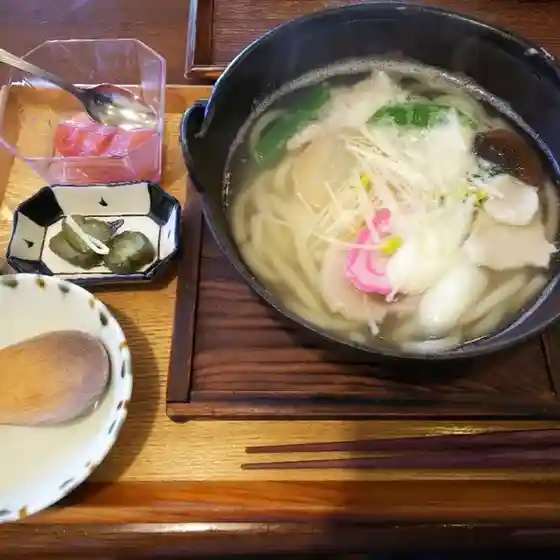
Nadeshiko
おおわに自然村 生ハム工房
Oowani Shizen Mura Nama Hamu Koubou
花りんご
Hana Ringo
ラ・タヴェル
Ra Taveru
いこい食堂
Ikoi Shokudou
界 津軽
Kai Tsugaru
赤湯
Akayu
やきとりHIDEちゃん
Yakitori Hide Chan
昇泉閣 紅葉館
Noboru Izumi Kaku Kouyou Kan
鰐come うぇるかむ
Wani Come Uerukamu
ささき
Sasaki
Sights
Owani Town Regional Exchange Center Wani-come
Located within easy walking distance of JR Owani-Onsen Station, Owani Town Regional Exchange Centre Wani-come is a day trip onsen facility which allows visitors an easy way to enjoy Owani Onsen, with its 800-year-long history.
Owani Onsen Hot-Spring Village

With a history of over 800 years, Owani Onsen has long been popular as a hot-spring retreat in the Tsugaru region.
Oyu Kaikan (Owani Onsen Kaikan)

One of nine public bathhouses of Owani Onsen.
Owani Onsen Ski Resort
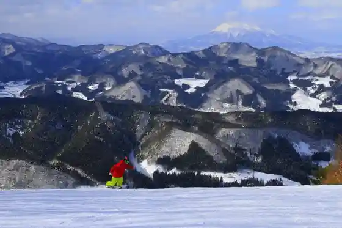
Owani Onsen Ski Resort is approximately 15 minutes by car on National Route 7 from Tohoku Expressway Owani Hirosaki Interchange.
Owani Onsen Moyashi
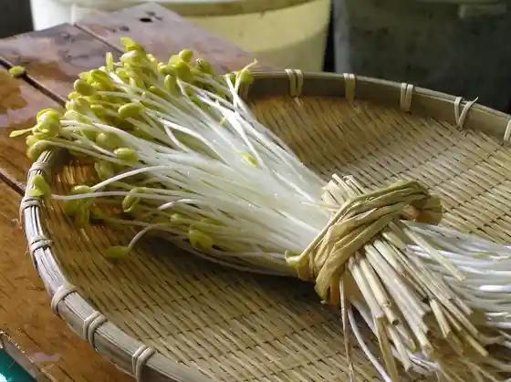
Traditional bean sprouts grown with hot spring heat, once presented to the Tsugaru lords.
Ajara no Mori Campground
Campground at the foot of Mt. Ajara with lawn sites, cabins and bungalows.
Daienji Temple
Temple with a vermilion gate enshrining Dainichi Nyorai and the zodiac sheep and monkey.
Ishi no To Rock
24 m volcanic rock tower in Hayasino, once said to have fallen from the sky.
KAI Tsugaru
Quiet hot spring ryokan near Hirosaki with an arched outdoor bath and Tsugaru culture.
Raw Ham Making Experience (Nama Ham Juku)
Workshop at a ham workshop in a former elementary school, making naturally aged ham.